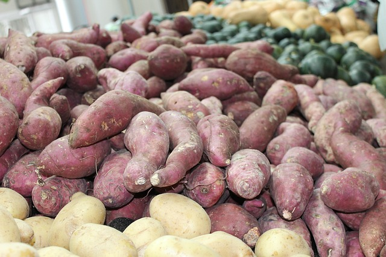

Lust auf was Neues?
 Sandros Carbonara
Sandros Carbonara
 Leberkas Pfanne
Leberkas Pfanne
 Dmitrii Pelmeni
Dmitrii Pelmeni
Ist eine Süßkartoffel gesünder als normale Kartoffeln?
Im Vergleich: Die Kartoffel enthält weniger Kohlenhydrate und Ballaststoffe als die Süßkartoffel, allerdings im Verhältnis auch weniger Fett. Neben Kohlenhydraten punkten Süßkartoffeln auch mit vielen Vitaminen und Mineralstoffen. Sie enthalten zum Beispiel mehr Calcium, Vitamin C und Vitamin E als Kartoffeln
